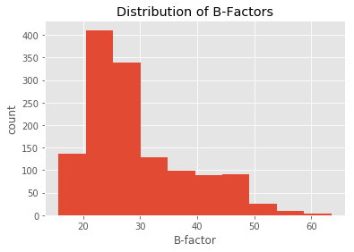
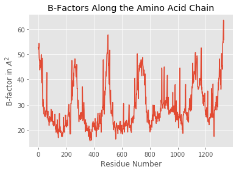
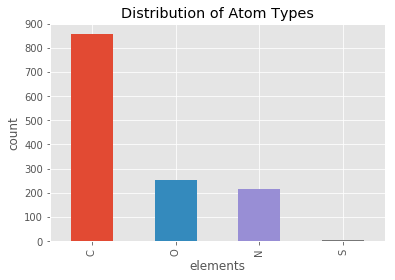

Working with PDB Structures in DataFrames
Loading PDB Files
There are 2 1/2 ways to load a PDB structure into a PandasPdb object.
1
PDB files can be directly fetched from The Protein Data Bank at http://www.rcsb.org via its unique 4-letter after initializing a new PandasPdb object and calling the fetch_pdb method:
from biopandas.pdb import PandasPdb
# Initialize a new PandasPdb object
# and fetch the PDB file from rcsb.org
ppdb = PandasPdb().fetch_pdb('3eiy')
2 a)
Alternatively, we can load PDB files from local directories as regular PDB files using read_pdb:
ppdb.read_pdb('./data/3eiy.pdb')
<biopandas.pdb.pandas_pdb.PandasPdb at 0x11912b710>
[File link: 3eiy.pdb]
2 b)
Or, we can load them from gzip archives like so (note that the file must end with a '.gz' suffix in order to be recognized as a gzip file):
ppdb.read_pdb('./data/3eiy.pdb.gz')
<biopandas.pdb.pandas_pdb.PandasPdb at 0x11912b710>
[File link: 3eiy.pdb.gz]
After the file was succesfully loaded, we have access to the following attributes:
print('PDB Code: %s' % ppdb.code)
print('PDB Header Line: %s' % ppdb.header)
print('\nRaw PDB file contents:\n\n%s\n...' % ppdb.pdb_text[:1000])
PDB Code: 3eiy
PDB Header Line: HYDROLASE 17-SEP-08 3EIY
Raw PDB file contents:
HEADER HYDROLASE 17-SEP-08 3EIY
TITLE CRYSTAL STRUCTURE OF INORGANIC PYROPHOSPHATASE FROM BURKHOLDERIA
TITLE 2 PSEUDOMALLEI WITH BOUND PYROPHOSPHATE
COMPND MOL_ID: 1;
COMPND 2 MOLECULE: INORGANIC PYROPHOSPHATASE;
COMPND 3 CHAIN: A;
COMPND 4 EC: 3.6.1.1;
COMPND 5 ENGINEERED: YES
SOURCE MOL_ID: 1;
SOURCE 2 ORGANISM_SCIENTIFIC: BURKHOLDERIA PSEUDOMALLEI 1710B;
SOURCE 3 ORGANISM_TAXID: 320372;
SOURCE 4 GENE: PPA, BURPS1710B_1237;
SOURCE 5 EXPRESSION_SYSTEM
...
The most interesting / useful attribute is the PandasPdb.df DataFrame dictionary though, which gives us access to the PDB files as pandas DataFrames. Let's print the first 3 lines from the ATOM coordinate section to see how it looks like:
ppdb.df['ATOM'].head(3)
| record_name | atom_number | blank_1 | atom_name | ... | segment_id | element_symbol | charge | line_idx | |
|---|---|---|---|---|---|---|---|---|---|
| 0 | ATOM | 1 | N | ... | N | NaN | 609 | ||
| 1 | ATOM | 2 | CA | ... | C | NaN | 610 | ||
| 2 | ATOM | 3 | C | ... | C | NaN | 611 |
3 rows × 21 columns
But more on that in the next section.
Looking at PDBs in DataFrames
PDB files are parsed according to the PDB file format description. More specifically, BioPandas reads the columns of the ATOM and HETATM sections as shown in the following excerpt from http://deposit.rcsb.org/adit/docs/pdb_atom_format.html#ATOM.
| COLUMNS | DATA TYPE | CONTENTS | biopandas column name |
|---|---|---|---|
| 1 - 6 | Record name | "ATOM" | record_name |
| 7 - 11 | Integer | Atom serial number. | atom_number |
| 12 | blank_1 | ||
| 13 - 16 | Atom | Atom name. | atom_name |
| 17 | Character | Alternate location indicator. | alt_loc |
| 18 - 20 | Residue name | Residue name. | residue_name |
| 21 | blank_2 | ||
| 22 | Character | Chain identifier. | chain_id |
| 23 - 26 | Integer | Residue sequence number. | residue_number |
| 27 | AChar | Code for insertion of residues. | insertion |
| 28 - 30 | blank_3 | ||
| 31 - 38 | Real(8.3) | Orthogonal coordinates for X in Angstroms. | x_coord |
| 39 - 46 | Real(8.3) | Orthogonal coordinates for Y in Angstroms. | y_coord |
| 47 - 54 | Real(8.3) | Orthogonal coordinates for Z in Angstroms. | z_coord |
| 55 - 60 | Real(6.2) | Occupancy. | occupancy |
| 61 - 66 | Real(6.2) | Temperature factor (Default = 0.0). | bfactor |
| 67-72 | blank_4 | ||
| 73 - 76 | LString(4) | Segment identifier, left-justified. | segment_id |
| 77 - 78 | LString(2) | Element symbol, right-justified. | element_symbol |
| 79 - 80 | LString(2) | Charge on the atom. | charge |
Below is an example of how this would look like in an actual PDB file:
Example:
1 2 3 4 5 6 7 8
12345678901234567890123456789012345678901234567890123456789012345678901234567890
ATOM 145 N VAL A 25 32.433 16.336 57.540 1.00 11.92 A1 N
ATOM 146 CA VAL A 25 31.132 16.439 58.160 1.00 11.85 A1 C
ATOM 147 C VAL A 25 30.447 15.105 58.363 1.00 12.34 A1 C
ATOM 148 O VAL A 25 29.520 15.059 59.174 1.00 15.65 A1 O
ATOM 149 CB AVAL A 25 30.385 17.437 57.230 0.28 13.88 A1 C
ATOM 150 CB BVAL A 25 30.166 17.399 57.373 0.72 15.41 A1 C
ATOM 151 CG1AVAL A 25 28.870 17.401 57.336 0.28 12.64 A1 C
ATOM 152 CG1BVAL A 25 30.805 18.788 57.449 0.72 15.11 A1 C
ATOM 153 CG2AVAL A 25 30.835 18.826 57.661 0.28 13.58 A1 C
ATOM 154 CG2BVAL A 25 29.909 16.996 55.922 0.72 13.25 A1 C
After loading a PDB file from rcsb.org or our local drive, the PandasPdb.df attribute should contain the following 4 DataFrame objects:
from biopandas.pdb import PandasPdb
ppdb = PandasPdb()
ppdb.read_pdb('./data/3eiy.pdb')
ppdb.df.keys()
dict_keys(['ATOM', 'HETATM', 'ANISOU', 'OTHERS'])
[File link: 3eiy.pdb]
- 'ATOM': contains the entries from the ATOM coordinate section
- 'ATOM': ... entries from the "HETATM" coordinate section
- 'ANISOU': ... entries from the "ANISOU" coordinate section
- 'OTHERS': Everything else that is not a 'ATOM', 'HETATM', or 'ANISOU' entry

The columns of the 'HETATM' DataFrame are indentical to the 'ATOM' DataFrame that we've seen earlier:
ppdb.df['HETATM'].head(2)
| record_name | atom_number | blank_1 | atom_name | ... | segment_id | element_symbol | charge | line_idx | |
|---|---|---|---|---|---|---|---|---|---|
| 0 | HETATM | 1332 | K | ... | K | NaN | 1940 | ||
| 1 | HETATM | 1333 | NA | ... | NA | NaN | 1941 |
2 rows × 21 columns
Note that "ANISOU" entries are handled a bit differently as specified at http://deposit.rcsb.org/adit/docs/pdb_atom_format.html#ATOM.
ppdb.df['ANISOU'].head(2)
| record_name | atom_number | blank_1 | atom_name | ... | blank_4 | element_symbol | charge | line_idx |
|---|
0 rows × 21 columns
Not every PDB file contains ANISOU entries (similarly, some PDB files may only contain HETATM or ATOM entries). If records are basent, the DataFrame will be empty as show above.
ppdb.df['ANISOU'].empty
True
Since the DataFrames are fairly wide, let's us take a look at the columns by accessing the DataFrame's column attribute:
ppdb.df['ANISOU'].columns
Index(['record_name', 'atom_number', 'blank_1', 'atom_name', 'alt_loc', 'residue_name', 'blank_2', 'chain_id', 'residue_number', 'insertion', 'blank_3', 'U(1,1)', 'U(2,2)', 'U(3,3)', 'U(1,2)', 'U(1,3)', 'U(2,3)', 'blank_4', 'element_symbol', 'charge', 'line_idx'], dtype='object')
ANISOU records are very similar to ATOM/HETATM records. In fact, the columns 7 - 27 and 73 - 80 are identical to their corresponding ATOM/HETATM records, which means that the 'ANISOU' DataFrame doesn't have the following entries:
set(ppdb.df['ATOM'].columns).difference(set(ppdb.df['ANISOU'].columns))
{'b_factor', 'occupancy', 'segment_id', 'x_coord', 'y_coord', 'z_coord'}
Instead, the "ANISOU" DataFrame contains the anisotropic temperature factors "U(-,-)" -- note that these are scaled by a factor of () by convention.
set(ppdb.df['ANISOU'].columns).difference(set(ppdb.df['ATOM'].columns))
{'U(1,1)', 'U(1,2)', 'U(1,3)', 'U(2,2)', 'U(2,3)', 'U(3,3)'}
Ah, another interesting thing to mention is that the columns already come with the types you'd expect (where object essentially "means" str here):
ppdb.df['ATOM'].dtypes
record_name object
atom_number int64
blank_1 object
atom_name object
alt_loc object
residue_name object
blank_2 object
chain_id object
residue_number int64
insertion object
blank_3 object
x_coord float64
y_coord float64
z_coord float64
occupancy float64
b_factor float64
blank_4 object
segment_id object
element_symbol object
charge float64
line_idx int64
dtype: object
Typically, all good things come in threes, however, there is a 4th DataFrame, an'OTHER' DataFrame, which contains everything that wasn't parsed as 'ATOM', 'HETATM', or 'ANISOU' coordinate section:
ppdb.df['OTHERS'].head(5)
| record_name | entry | line_idx | |
|---|---|---|---|
| 0 | HEADER | HYDROLASE 17... | 0 |
| 1 | TITLE | CRYSTAL STRUCTURE OF INORGANIC PYROPHOSPHA... | 1 |
| 2 | TITLE | 2 PSEUDOMALLEI WITH BOUND PYROPHOSPHATE | 2 |
| 3 | COMPND | MOL_ID: 1; | 3 |
| 4 | COMPND | 2 MOLECULE: INORGANIC PYROPHOSPHATASE; | 4 |
Although these 'OTHER' entries are typically less useful for structure-related computations, you may still want to take a look at them to get a short summary of the PDB structure and learn about it's potential quirks and gotchas (typically listed in the REMARKs section). Lastly, the "OTHERS" DataFrame comes in handy if we want to reconstruct the structure as PDB file as we will see later (note the line_idx columns in all of the DataFrames).
Working with PDB DataFrames
In the previous sections, we've seen how to load PDB structures into DataFrames, and how to access them. Now, let's talk about manipulating PDB files in DataFrames.
from biopandas.pdb import PandasPdb
ppdb = PandasPdb()
ppdb.read_pdb('./data/3eiy.pdb.gz')
ppdb.df['ATOM'].head()
| record_name | atom_number | blank_1 | atom_name | ... | segment_id | element_symbol | charge | line_idx | |
|---|---|---|---|---|---|---|---|---|---|
| 0 | ATOM | 1 | N | ... | N | NaN | 609 | ||
| 1 | ATOM | 2 | CA | ... | C | NaN | 610 | ||
| 2 | ATOM | 3 | C | ... | C | NaN | 611 | ||
| 3 | ATOM | 4 | O | ... | O | NaN | 612 | ||
| 4 | ATOM | 5 | CB | ... | C | NaN | 613 |
5 rows × 21 columns
[File link: 3eiy.pdb.gz]
Okay, there's actually not that much to say ...
Once we have our PDB file in the DataFrame format, we have the whole convenience of pandas right there at our fingertips.
For example, let's get all Proline residues:
ppdb.df['ATOM'][ppdb.df['ATOM']['residue_name'] == 'PRO'].head()
| record_name | atom_number | blank_1 | atom_name | ... | segment_id | element_symbol | charge | line_idx | |
|---|---|---|---|---|---|---|---|---|---|
| 38 | ATOM | 39 | N | ... | N | NaN | 647 | ||
| 39 | ATOM | 40 | CA | ... | C | NaN | 648 | ||
| 40 | ATOM | 41 | C | ... | C | NaN | 649 | ||
| 41 | ATOM | 42 | O | ... | O | NaN | 650 | ||
| 42 | ATOM | 43 | CB | ... | C | NaN | 651 |
5 rows × 21 columns
Or main chain atoms:
ppdb.df['ATOM'][ppdb.df['ATOM']['atom_name'] == 'C'].head()
| record_name | atom_number | blank_1 | atom_name | ... | segment_id | element_symbol | charge | line_idx | |
|---|---|---|---|---|---|---|---|---|---|
| 2 | ATOM | 3 | C | ... | C | NaN | 611 | ||
| 8 | ATOM | 9 | C | ... | C | NaN | 617 | ||
| 19 | ATOM | 20 | C | ... | C | NaN | 628 | ||
| 25 | ATOM | 26 | C | ... | C | NaN | 634 | ||
| 33 | ATOM | 34 | C | ... | C | NaN | 642 |
5 rows × 21 columns
It's also easy to strip our coordinate section from hydrogen atoms if there are any ...
ppdb.df['ATOM'][ppdb.df['ATOM']['element_symbol'] != 'H'].head()
| record_name | atom_number | blank_1 | atom_name | ... | segment_id | element_symbol | charge | line_idx | |
|---|---|---|---|---|---|---|---|---|---|
| 0 | ATOM | 1 | N | ... | N | NaN | 609 | ||
| 1 | ATOM | 2 | CA | ... | C | NaN | 610 | ||
| 2 | ATOM | 3 | C | ... | C | NaN | 611 | ||
| 3 | ATOM | 4 | O | ... | O | NaN | 612 | ||
| 4 | ATOM | 5 | CB | ... | C | NaN | 613 |
5 rows × 21 columns
Or, let's compute the average temperature factor of our protein main chain:
mainchain = ppdb.df['ATOM'][(ppdb.df['ATOM']['atom_name'] == 'C') |
(ppdb.df['ATOM']['atom_name'] == 'O') |
(ppdb.df['ATOM']['atom_name'] == 'N') |
(ppdb.df['ATOM']['atom_name'] == 'CA')]
bfact_mc_avg = mainchain['b_factor'].mean()
print('Average B-Factor [Main Chain]: %.2f' % bfact_mc_avg)
Average B-Factor [Main Chain]: 28.83
Plotting
Since we are using pandas under the hood, which in turns uses matplotlib under the hood, we can produce quick summary plots of our PDB structures relatively conveniently:
from biopandas.pdb import PandasPdb
ppdb = PandasPdb().read_pdb('./data/3eiy.pdb.gz')
[File link: 3eiy.pdb.gz]
%matplotlib inline
import matplotlib.pyplot as plt
from matplotlib import style
style.use('ggplot')
ppdb.df['ATOM']['b_factor'].plot(kind='hist')
plt.title('Distribution of B-Factors')
plt.xlabel('B-factor')
plt.ylabel('count')
plt.show()

ppdb.df['ATOM']['b_factor'].plot(kind='line')
plt.title('B-Factors Along the Amino Acid Chain')
plt.xlabel('Residue Number')
plt.ylabel('B-factor in $A^2$')
plt.show()

ppdb.df['ATOM']['element_symbol'].value_counts().plot(kind='bar')
plt.title('Distribution of Atom Types')
plt.xlabel('elements')
plt.ylabel('count')
plt.show()

Computing the Root Mean Square Deviation
BioPandas also comes with certain convenience functions, for example, ...
The Root-mean-square deviation (RMSD) is simply a measure of the average distance between atoms of 2 protein or ligand structures. This calculation of the Cartesian error follows the equation:
So, assuming that the we have the following 2 conformations of a ligand molecule

we can compute the RMSD as follows:
from biopandas.pdb import PandasPdb
l_1 = PandasPdb().read_pdb('./data/lig_conf_1.pdb')
l_2 = PandasPdb().read_pdb('./data/lig_conf_2.pdb')
r = PandasPdb.rmsd(l_1.df['HETATM'], l_2.df['HETATM'],
s=None) # all atoms, including hydrogens
print('RMSD: %.4f Angstrom' % r)
RMSD: 2.6444 Angstrom
[File links: lig_conf_1.pdb, lig_conf_2.pdb]
r = PandasPdb.rmsd(l_1.df['HETATM'], l_2.df['HETATM'],
s='carbon') # carbon atoms only
print('RMSD: %.4f Angstrom' % r)
RMSD: 3.1405 Angstrom
r = PandasPdb.rmsd(l_1.df['HETATM'], l_2.df['HETATM'],
s='heavy') # heavy atoms only
print('RMSD: %.4f Angstrom' % r)
RMSD: 1.9959 Angstrom
Similarly, we can compute the RMSD between 2 related protein structures:

The hydrogen-free RMSD:
p_1 = PandasPdb().read_pdb('./data/1t48_995.pdb')
p_2 = PandasPdb().read_pdb('./data/1t49_995.pdb')
r = PandasPdb.rmsd(p_1.df['ATOM'], p_2.df['ATOM'], s='heavy')
print('RMSD: %.4f Angstrom' % r)
RMSD: 0.7377 Angstrom
Or the RMSD between the main chains only:
p_1 = PandasPdb().read_pdb('./data/1t48_995.pdb')
p_2 = PandasPdb().read_pdb('./data/1t49_995.pdb')
r = PandasPdb.rmsd(p_1.df['ATOM'], p_2.df['ATOM'], s='main chain')
print('RMSD: %.4f Angstrom' % r)
RMSD: 0.4781 Angstrom
Filtering PDBs by Distance
We can use the distance method to compute the distance between each atom (or a subset of atoms) in our data frame and a three-dimensional reference point. For example:
p_1 = PandasPdb().read_pdb('./data/3eiy.pdb')
reference_point = (9.362, 41.410, 10.542)
distances = p_1.distance(xyz=reference_point, records=('ATOM',))
[File link: 3eiy.pdb]
The distance method returns a Pandas Series object:
distances.head()
0 19.267419
1 18.306060
2 16.976934
3 16.902897
4 18.124171
dtype: float64
And we can use this Series object, for instance, to select certain atoms in our DataFrame that fall within a desired distance threshold. For example, let's select all atoms that are within 7A of our reference point:
all_within_7A = p_1.df['ATOM'][distances < 7.0]
all_within_7A.tail()
| record_name | atom_number | blank_1 | atom_name | ... | segment_id | element_symbol | charge | line_idx | |
|---|---|---|---|---|---|---|---|---|---|
| 786 | ATOM | 787 | CB | ... | C | NaN | 1395 | ||
| 787 | ATOM | 788 | CG | ... | C | NaN | 1396 | ||
| 788 | ATOM | 789 | CD1 | ... | C | NaN | 1397 | ||
| 789 | ATOM | 790 | CD2 | ... | C | NaN | 1398 | ||
| 790 | ATOM | 791 | N | ... | N | NaN | 1399 |
5 rows × 21 columns
Visualized in PyMOL, this subset (yellow surface) would look as follows:

Converting Amino Acid codes from 3- to 1-letter codes
Residues in the residue_name field can be converted into 1-letter amino acid codes, which may be useful for further sequence analysis, for example, pair-wise or multiple sequence alignments:
from biopandas.pdb import PandasPdb
ppdb = PandasPdb().fetch_pdb('5mtn')
sequence = ppdb.amino3to1()
sequence.tail()
| chain_id | residue_name | |
|---|---|---|
| 1378 | B | I |
| 1386 | B | N |
| 1394 | B | Y |
| 1406 | B | R |
| 1417 | B | T |
As shown above, the amino3to1 method returns a DataFrame containing the chain_id and residue_name of the translated 1-letter amino acids. If you like to work with the sequence as a Python list of string characters, you could do the following:
sequence_list = list(sequence.loc[sequence['chain_id'] == 'A', 'residue_name'])
sequence_list[-5:] # last 5 residues of chain A
['V', 'R', 'H', 'Y', 'T']
And if you prefer to work with the sequence as a string, you can use the join method:
''.join(sequence.loc[sequence['chain_id'] == 'A', 'residue_name'])
'SLEPEPWFFKNLSRKDAERQLLAPGNTHGSFLIRESESTAGSFSLSVRDFDQGEVVKHYKIRNLDNGGFYISPRITFPGLHELVRHYT'
To iterate over the sequences of multi-chain proteins, you can use the unique method as shown below:
for chain_id in sequence['chain_id'].unique():
print('\nChain ID: %s' % chain_id)
print(''.join(sequence.loc[sequence['chain_id'] == chain_id, 'residue_name']))
Chain ID: A
SLEPEPWFFKNLSRKDAERQLLAPGNTHGSFLIRESESTAGSFSLSVRDFDQGEVVKHYKIRNLDNGGFYISPRITFPGLHELVRHYT
Chain ID: B
SVSSVPTKLEVVAATPTSLLISWDAPAVTVVYYLITYGETGSPWPGGQAFEVPGSKSTATISGLKPGVDYTITVYAHRSSYGYSENPISINYRT
Wrapping it up - Saving PDB structures
Finally, let's talk about how to get the PDB structures out of the DataFrame format back into the beloved .pdb format.
Let's say we loaded a PDB structure, removed it from it's hydrogens:
from biopandas.pdb import PandasPdb
ppdb = PandasPdb().read_pdb('./data/3eiy.pdb.gz')
ppdb.df['ATOM'] = ppdb.df['ATOM'][ppdb.df['ATOM']['element_symbol'] != 'H']
[File link: 3eiy.pdb.gz]
We can save the file using the PandasPdb.to_pdb method:
ppdb.to_pdb(path='./data/3eiy_stripped.pdb',
records=None,
gz=False,
append_newline=True)
[File link: 3eiy_stripped.pdb]
By default, all records (that is, 'ATOM', 'HETATM', 'OTHERS', 'ANISOU') are written if we set records=None. Alternatively, let's say we want to get rid of the 'ANISOU' entries and produce a compressed gzip archive of our PDB structure:
ppdb.to_pdb(path='./data/3eiy_stripped.pdb.gz',
records=['ATOM', 'HETATM', 'OTHERS'],
gz=True,
append_newline=True)
[File link: 3eiy_stripped.pdb.gz]